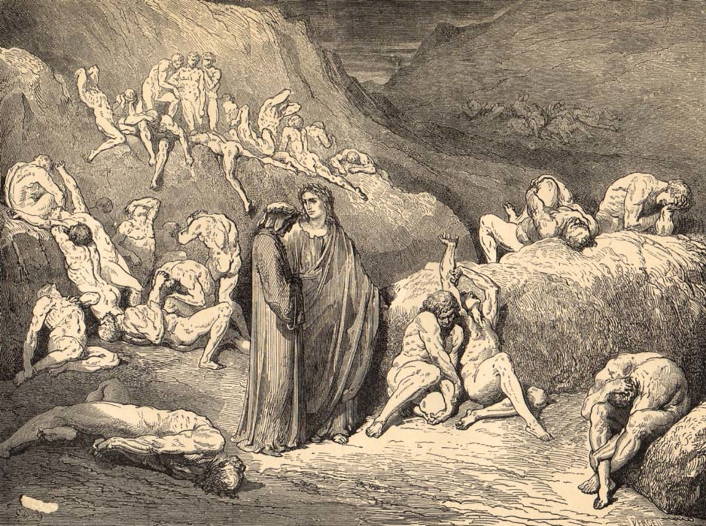

Ancora nell'ottava bolgia, un'altra fiamma racchiude Guido da Montefeltro, che chiede notizie sulla situazione politica della Romagna. Guido racconta come fu convinto da papa Bonifacio VIII a dare un consiglio fraudolento per espugnare Palestrina, confidando in un'assoluzione preventiva che si rivelò teologicamente nulla, condannandolo così all'Inferno.
I poeti passano alla nona bolgia, dove i seminatori di discordie e scismi vengono continuamente mutilati dalla spada di un diavolo, per poi risanarsi a ogni giro. Dante incontra Maometto squarciato, Pier da Medicina con la gola tagliata e Bertran de Born, che cammina tenendo in mano la propria testa recisa come una lanterna, perfetta legge del contrappasso.
